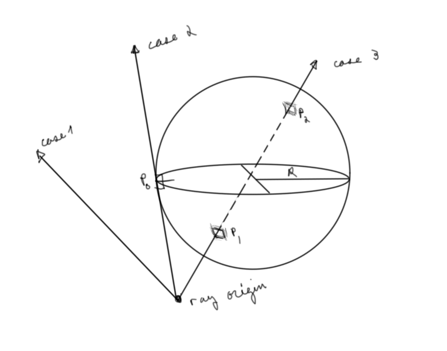
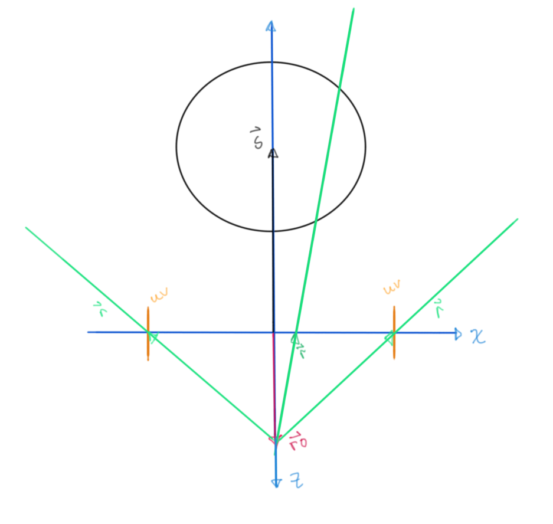
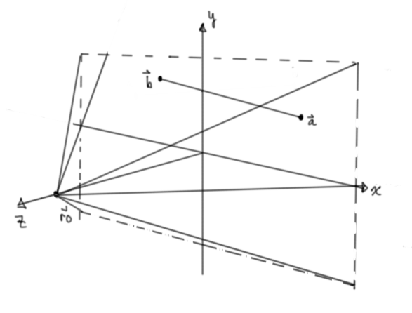

Ray Sphere Intersection
TL;DR: Real time shader can be found here
Some time ago I stumbled across an article on Gamasutra written by a graphics programmer at Double Fine Productions. In it, among other things that I hope to write articles on soon, he prescribes calculating the intersection between a ray and a sphere as part of a beginner's checklist. This is supposed to be an analytical exercise on paper, but let's use that as a the basis for a shadertoy style fragment shader for a visualization and a more complete beginner's checkmark.
There are many different resources for you to learn from, here are the ones that were the most useful to me while writing this:
- Wikipedia: Algebraic line-sphere intersection derivation
- Art of Code: Geometric line-sphere intersection derivation
- Scratchapixel: Geometric and algebraic line-sphere intersection derivation
- Susakaba.net: line segment distance field derivation (google translate is pretty amazing)
Let's draw a picture to help our thoughts. We all understand what a line intersecting with a sphere should be like intuitively, but drawing a few different lines immediately shows the possible cases. 
This is a start, but... :
"I often say that when you can measure what you are speaking about, and express it in numbers, you know something about it; but when you cannot measure it, when you cannot express it in numbers, your knowledge is of a meagre and unsatisfactory kind; it may be the beginning of knowledge, but you have scarcely, in your thoughts, advanced to the stage of science, whatever the matter may be." - Lord Kelvin
We need a coordinate system to express space with numbers. If we were just doing this on paper, we would be set with our choice number of any number of systems like the traditional cartesian one we learn in school, but how to translate this into a shader?

For the uninitiated this seems like a pretty daunting and obscure task, I know it did for me.
We need a coordinate system that includes the sphere, the ray and the screen space that has pixels.
By convention and since we're working in glsl (directX uses a left handed corrdinate system) We chose a right handed coordinate system with the positive $z$ axis coming out of the screen:
Let ${ro}↖{→}$, $s↖{→}$ and ${uv}↖{→}$ be the camera, sphere, and screen space position vectors respectively.

A ray, ${r}↖{→}$, from the ray origin, the "camera", that is incident with the screen can then be given by the vector expression ${ro}↖{→}+{r}↖{→} = {uv}↖{→}$

It's difficult to think about initially, but this is all done in parallel, so there is a ray for every ${uv}↖{→}$.
All possible incident rays form a frustrum

Our goal is to find where these rays that cross the screen uv-plane intersect with a given sphere. This of course has a geometric and algebraic represention.
"L'algèbre n’est qu’une géométrie écrite, la géométrie n'est qu'une algèbre figurée." : : "Algebra is nothing but written geometry, geometry nothing but figured algebra" - Sophie Germain
Algebraically, this will be where the equation of the sphere is equal to the equation for the ray. Geometrically, this will be two distances away from the ray origin within certain geometrical constraints. Let's start with the geometrical one as it's maybe more intuitive (although slightly more work):
Looking at a zx-plane cross section, we can find an intermediary distance inside the sphere using the dot product:

Let ${u_r}↖{→}$ be the unit vector of $r↖{→}$, defined as: ${r↖{→}}/{||r↖{→}||}$
The relative position vector from the ray origin to the sphere is $s↖{→} - {ro}↖{→}$;
the projection length of this vector onto the the ray then is: ||$s↖{→} - {ro}↖{→}$||$cos θ$
This is nothing more than the dot product between ${u_r}↖{→}$ and $s↖{→} - {ro}↖{→}$ since $u_r = $ ||${u_r}↖{→}$||$ = 1$
Dropping the norm symbol to save some digital chalk.
${u_r}↖{→} ⋅ (s↖{→} - {ro}↖{→}) = (u_r)(s - ro)\cos θ = λ$

$ξ^2 + δ^2 = R^2$; ⇒ $δ = ±(R^2 - ξ^2)^{1/2}$
This value added to the original projection length gives us the distance to the respective incident points.
This can be visualized in a shader if this distance is normalized according to longest and shortest incident rays, so we don't even need the vector valued position, just these simple distance values.
That was a lot of drawing for so little return. The algebraic approach is much cleaner:

The fundamental notion of a sphere (or circle or whatever dimension sphere thingy) is that the relative position length between its center and any point on its surface must be its radius. Written in vector notation with a little manipulation using properties of dot products, we can massage this into a quadratic equation in terms of the unknown incident distance ℓ.

The last bit of effort to give a shader visualization is to derive an equation for a line-line intersection in three dimensions which is surprisingly harder than the two dimension version we all learn in gradeschool.
As usual, we consider the thing we're trying to do with respect to our ray setup:
Looking at the same set up from a different point of view for some given ray:

This is a distance field from the line segment. We can mimic a ray by making this rapidly get bigger and then clamping the values between zero and one.
For your benefit and knowledge's sake, here are two other derivations that I came across while trying to understand this problem:
- Inigo Quilez's signed distance field of a capsule; this seems to be the most optimized one, iq is just the man
- This is a derivation by Ronald Goldman from the book "Graphics Gems by Andrew S. Glassner":
Let's put it all together in a shader:
We define and normalize a sphere with our choice of ray sphere intersection equations, then we define a line segment with one end that's influenced obliquely by the mouse and the other end on the surface of the sphere in the direction of an intersecting line using that same ray sphere intersection equation.
Real time shader can again be found here
Shader code can be found here
As simple as this write up ultimately is, it remains a fundamental lesson in shaders for me, hopefully it helps someone else out too. Thank you for reading, cheers!